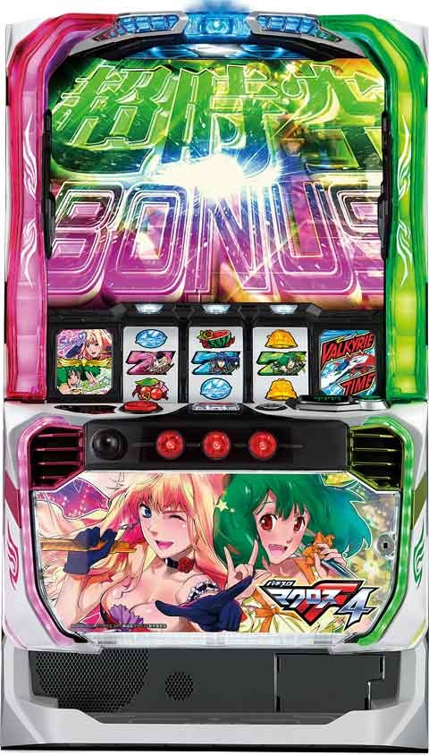

Lマクロスフロンティア4

[天井情報]
液晶G数 1500G+α
実ゲーム数 1000G+α
歌姫ボーナス以上当選
リセット時は液晶800G+α
[リセット判別]
ガックンあり
[有利区間について]
設定変更時以外の有利区間リセット時は「最終決戦」に突入。
有利区間切断条件 「エンディング後」や「上位AT終了時の一部」
狙い目
[リセット狙い]
200Gから(液晶300Gから)
[ボーナス間天井狙い]
店データ機 580Gから
液晶G 870Gから
※液晶G数は1.4-1.5倍程度進む
[ATスルー天井狙い]
現状最大6スルー
5スルー 160G(液晶230)から
6スルー 0から
[ゾーン狙い]
液晶90Gから100のゾーンまで
液晶490Gから500のゾーンまで
※500ゾーン歌前兆非発生で当選まで？
[有利区間切れ狙い]
同一有利区間内0から差枚2000枚以上で有利切れ？
1800枚以上なら天国まで？
【マクロス即やめ狙い】
ボナ後で歌姫チャージ3個以上の台を打つ感じみたいです。
店データで19G以上で液晶が1なら狙える様です。
※データ機によってはわからないケースあります。
参考元 必勝期待値クマぱぱ
やめ時
終了後15G付近の歌前兆確認してやめ。前兆発生時は天国の可能性高くなるため天国まで。
前兆より先に歌姫チャージが来ると即前兆否定？
その他
モード
{kind=link}
{kind=link}
参考元
基本情報
- メーカー: SANKYO
- 機械割: 97.7% 〜 114.9%
- 導入開始日: 2024年01月09日（火）
- ゲーム性概要: 通常時はレア役やゲーム数消化でボーナスを目指すシンプルなゲーム性。ボーナス後の歌姫ゾーン中の青7揃いがAT当選のメイン契機だ。 AT「バルキリータイム」は純増約1.5枚/Gのゲーム数管理型で、初期ゲーム数はトライアングルチャンスで決定。AT中はゲーム数上乗せやボーナスなどを抽選していて、ボーナス高確率の「歌姫ドライブ」も存在する。規定回数のボーナスで「歌姫ドライブ」の特化ゾーン「超時空バジュラッシュ」へ、最大10回目のボーナスで上位AT「超時空バルキリータイム」突入。 上位ATは5GのST型で、ボーナス当選で5Gを再セット。終了後の「最終決戦」では約50%で上位ATを引き戻すことができる。


打ち方
打ち方・小役
打ち方（小役狙い）
「最初に狙う絵柄」

左リールにBARを目安にチェリーを狙う。中右リールは取りこぼしがないので、フリー打ちでOKだ（レア役はすべてリプレイフラグなので、取りこぼしても出玉の損はない）。
「レア役の停止形」

歌姫ナビ

発生した時点でチェリー or スイカ確定。 中リールと右リールのどちらから押したかによって、出現するレア役が変化 する。
［中リール第1停止時・出目法則］

［右リール第1停止時・出目法則］

変則押しはNG

通常時、押し順ナビ非発生時は左リール第1停止での消化を推奨する。
押し順からのレア役
レア役の種類
チャンス目（A・B）、チェリー（弱・強）、スイカ（弱・強）に加えて中・右の2択ナビによってチェリー、スイカのどちらが出現する「歌姫レア役」が存在。
歌姫レア役以外のレア役に関しては常に一定の確率で抽選されているが、AT中は通常の押し順ナビからレア役が停止することがある。

これは レア役成立時の一部で押し順ナビを出している、いわゆる違和感演出パターン で、出現確率が変化しているわけではない。
つまり、押し順でレア役を強制的に停止させたり、逆に本来出現するはずのレア役を押し順でリプレイにしているというケースはない。
解析情報通常時
小役関連
歌姫レア役

特定のタイミングで2択ナビが発生すると歌姫レア役濃厚。 中から押すか右から押すかでチェリー or スイカのどちらが停止するかが決まる 。 液晶にシェリルがいる状態ならチェリー、ランカがいる状態ならスイカ成立で滞在状況に応じた報酬を獲得。両方が登場するデュエット（ユニゾン）中はナビ発生の時点で激アツだ（チェリーでもスイカでも報酬獲得）。
歌姫ナビ発生タイミング別・対応役停止時の恩恵
| タイミング | 対応弱レア役 | 対応強レア役 |
|---|---|---|
| 歌姫チャージ中 | 50G以上加算 | ボーナス当選!? |
| 歌前兆中 | 期待度アップ | ボーナス当選!? |
| 歌姫ゾーン中 | AT期待度約50% | AT当選!? |
| トライアングルチャンス中 | 大量上乗せのチャンス | |
| 歌姫ドライブ中 | ボーナス当選!? | |
| AT中のボーナス中 | ＋10G以上 | ＋50G以上 |
※対応役はシェリル＝弱or強チェリー、ランカ＝弱or強スイカ
通常時・小役確率
| 役 | 確率 |
|---|---|
| リプレイ | 約1/11 |
| 8枚ベル（設定1） | 約1/16 |
| 13枚ベル | 約1/214 |
| 3枚ベル | 約1/22 |
| チャンス目A・B（設定1） | 約1/41 |
| 弱チェリー | 約1/81 |
| 弱スイカ | 約1/81 |
| 強チェリー | 約1/655 |
| 強スイカ | 約1/655 |
| チェリー・スイカ合算 | 約1/36 |
| 全レア役合算 | 約1/19 |
※8枚ベルは押し順・共通ベルの合算値 ※チェリー・スイカ確率は歌姫レア役を含まない数値
リプレイの一部でメドレーステップアップが発生する（発生率は約1/6000）。
小役ごとの抽選内容・序列
| 抽選対象 | 役 |
|---|---|
| 高確移行 | チャンス目 |
| 歌姫チャージ | 通常中：弱チェリー・弱スイカ |
| 歌姫チャージ | 高確中：チャンス目＜弱チェリー・弱スイカ |
| 歌前兆 | 強チェリー・強スイカ（高確中は期待度アップ） |
※歌姫チャージは1契機で複数ストックの可能性あり
歌姫チャージ潜伏（前兆）中も同様の抽選がおこなわれる。
メドレーステップアップ

通常時、リプレイ成立時の一部で発生するボーナス以上濃厚演出。ステップアップするほどAT当選に期待でき、最大の4段階到達でロングフリーズ濃厚だ。
通常時・メドレーステップアップの恩恵
| 段階 | 通常時 |
|---|---|
| 1段階 | 歌姫ボーナス以上濃厚 |
| 2段階 | 歌姫ボーナス以上濃厚 |
| 3段階 | AT直撃濃厚 |
| 4段階 | ロングフリーズ |
| トータル発生確率 | 約1/6000 |
歌姫チャージ当選率 通常中
| 個数 | 弱チェリー／弱スイカ | チャンス目 |
|---|---|---|
| 1個 | 約26% | ー |
| 2個 | 約1% | ー |
| 3個 | ー | ー |
| トータル当選率 | 約27% | ー |
高確中
| 個数 | 弱チェリー／弱スイカ | チャンス目 |
|---|---|---|
| 1個 | 約48% | 約20% |
| 2個 | 約1% | ー |
| 3個 | 約1% | ー |
| トータル当選率 | 約50% | 約20% |
1契機で最大3個ストックする可能性あり。当選時は5G前後の前兆を経由して告知される。
強チェリーor強スイカ・歌前兆当選率 プレ前兆中以外
| 状態 | フェイク前兆 | 本前兆 |
|---|---|---|
| 通常中 | 約86% | 約14% |
| 高確中 | 約50% | 約50% |
プレ前兆中
| 状態 | フェイク前兆 | 本前兆 |
|---|---|---|
| 通常中 | 約70% | 約30% |
| 高確中 | 約30% | 約70% |
※プレ前兆…おもにグリフィスパークに滞在
プレ前兆中は、レア役成立時の本前兆当選率が高い。
内部状態関連
内部状態概要
内部状態には通常と高確の2種類があり、 チャンス目成立時 と 消化ゲーム数の末尾が50Gに到達 したタイミングで高確移行を抽選。高確はゲーム数管理型で、滞在中は歌姫チャージの当選率や歌前兆当選率がアップする。
高確移行契機＆補足
| 移行契機 | 補足 |
|---|---|
| チャンス目 | 高確移行を抽選 |
| 液晶ゲーム数表示 末尾50G到達時 | ゲーム数に応じて高確移行を抽選 |
| 液晶ゲーム数表示 末尾50G到達時 | 50Gは高確の期待大 150G、350G、550Gは高確移行濃厚 その他は最低33%で高確へ移行 |
| 液晶ゲーム数表示 末尾50G到達時 | 歌姫チャージで末尾50Gを超えた場合も 高確移行抽選をおこなう |
| その他 | 高確中は高確ゲーム数の加算が抽選される |
| その他 | 歌前兆へ移行した場合は高確ゲーム数の減算がストップ、 歌前兆終了後から再び減算がスタート |
チャンス目成立時の高確当選率＆高確ゲーム数加算率
| 状態 | 通常 | 高確 | 高確ゲーム数加算 |
|---|---|---|---|
| 通常 | 約70% | 約30% | ー |
| 高確 | ー | 約80% | 約20% |
高確は18G固定、高確中は高確ゲーム数が加算される（＋18G）。
末尾50G到達時・高確移行率
| ゲーム数 | 移行率 |
|---|---|
| 50G | 約75% |
| 150G | 濃厚 |
| 250G | 約50% |
| 350G | 濃厚 |
| 450G | 約50% |
| 550G | 濃厚 |
| 650G | 約50% |
| 750G | 約50% |
| 850G | 約34% |
| 950G | 約34% |
| 1050G | 約34% |
| 1150G | 約34% |
| 1250G | 約34% |
モード
モード概要
通常時は9種類のモードで天井やゾーンゲーム数が変化。有利区間移行時に初期モードが決まり、歌姫ボーナス（歌姫ゾーン）終了時やAT終了時に次のモードを抽選する。 設定変更時はバルキリータイムA、強チャンス、天国Aのいずれかのモードが選ばれるので最大天井は800Gだ （強チャンス or 天国期待度約75%）。
モードごとの天井ゲーム数
| モード | 最大天井 | 平均消化ゲーム数 |
|---|---|---|
| 通常A・B | 1500G | 約980G |
| チャンスA・B | 900G | 約590G |
| バルキリータイムA・B | 800G | 約530G |
| 強チャンス | 600G | 約400G |
| 天国A・B | 100G | 約70G |
モードごとの法則
| モード | 法則 |
|---|---|
| 通常A・B | 百の位が偶数のゲーム数で歌前兆に発展しやすい |
| 通常A・B | 500G台でユニゾン歌前兆のチャンス |
| 通常A・B | 1000Gでユニゾン歌前兆濃厚 |
| チャンスA・B | 百の位が偶数・奇数のどちらも歌前兆のチャンス |
| チャンスA・B | 400Gor500Gのどちらかでユニゾン歌前兆発生!? |
| チャンスA・B | 900Gでユニゾン歌前兆濃厚 |
| バルキリータイム A・B | 百の位が偶数のゲーム数で歌前兆に発展しやすい |
| バルキリータイム A・B | 500Gまでにユニゾン歌前兆へ発展しなければ バルキリータイムA・B以上の期待度アップ |
| バルキリータイム A・B | 天井到達時は歌姫ボーナス＋AT濃厚 |
| 強チャンス | 百の位が偶数のゲーム数で歌前兆に発展しやすい |
| 天国A・B | 100Gより前に歌前兆発生で天国滞在期待度アップ |
モードごとのゾーン（歌前兆）
| ゲーム数 | 通常A | 通常B | チャンスA |
|---|---|---|---|
| 1G～ | ー | ー | ー |
| 100G～ | ▲ | ▲ | ◯ |
| 200G～ | ◯ | ◯ | ー |
| 300G～ | ー | ー | ◯ |
| 400G～ | ◯ | ◯ | ー |
| 500G～ | ▲ | 2人◯ | 2人◯ |
| 600G～ | ◯ | ◯ | ー |
| 700G～ | ー | ー | ◯ |
| 800G～ | ◯ | ◯ | ー |
| 900G～ | ー | ー | 天井（2人） |
| 1000G～ | 2人◯ | 2人◯ | |
| 1100G～ | ー | ー | |
| 1200G～ | ◯ | ◯ | |
| 1300G～ | ー | ー | |
| 1400G～ | ◯ | ◯ | |
| 1500G～ | 天井 | 天井 | |
| ゲーム数 | チャンスB | VT-A | VT-B |
| 1G～ | ◯ | ー | ◯ |
| 100G～ | ▲ | ▲ | ▲ |
| 200G～ | ◯ | ◯ | ◯ |
| 300G～ | ー | ー | ー |
| 400G～ | 2人◯ | ◯ | ◯ |
| 500G～ | ー | ▲ | ー |
| 600G～ | ◯ | ◯ | ◯ |
| 700G～ | ー | ー | ー |
| 800G～ | ◯ | 天井 | 天井 |
| 900G～ | 天井（2人） |
1000G～ 1100G～ 1200G～ 1300G～ 1400G～ 1500G～
| ゲーム数 | 強チャンス | 天国A | 天国B |
|---|---|---|---|
| 1G～ | ー | ー | ◯ |
| 100G～ | ▲ | 天井 | 天井 |
| 200G～ | ◯ | ||
| 300G～ | ー | ||
| 400G～ | ◯ | ||
| 500G～ | ▲ | ||
| 600G～ | 天井 |
700G～
800G～
900G～
1000G～
1100G～
1200G～
1300G～
1400G～
1500G～
※VT…バルキリータイム ※▲…プレ前兆まで発生、◯…歌前兆突入（高設定ほど本前兆期待度アップ）、 2人…デュエットの歌前兆 ※設定変更時はゲーム数の短縮抽選がおこなわれるため、ゾーンがズレる可能性あり
モード移行期待度
| モード | 設定変更後以外 | 設定変更後 |
|---|---|---|
| 通常A | ◎ | ー |
| 通常B | ◎ | ー |
| チャンスA | ▲ | ー |
| チャンスB | ✕ | ー |
| バルキリータイムA | ✕ | ▲ |
| バルキリータイムB | ✕ | ー |
| 強チャンス | ✕ | ★ |
| 天国A | ◯ | ◎ |
| 天国B | ✕ | ー |
※期待度… ✕ ＜▲＜◯＜◎＜★
高設定ほど天国A・Bが選択されやすい。
AT終了後・天国移行率（実戦値）
| 設定 | 移行率 |
|---|---|
| 1 | 約25% |
| 6 | 約35% |
歌前兆
歌前兆概要

レア役成立後や規定ゲーム数到達で突入する前兆ステージ。突入時に成否が抽選され、失敗の場合はレア役で成功への書き換えが抽選される。
歌前兆突入確率＆成功期待度
| 設定 | 確率 | 期待度（※） |
|---|---|---|
| 1 | 約1/90 | 約37% |
| 2 | 約1/90 | 約37% |
| 3 | 約1/89 | 約39% |
| 4 | 約1/88 | 約41% |
| 5 | 約1/86 | 約44% |
| 6 | 約1/85 | 約46% |
※フェイク前兆中の昇格を含むトータルの成功期待度
［ステップアップするほどチャンス］

1st＜2nd＜3rd＜4thと＜LASTの順に期待度アップ。LAST到達でボーナス以上濃厚、白のまま発展した場合もボーナス以上濃厚だ。
［デュエットはチャンス］

基本的に、シェリルとランカが交互に登場するが、同一キャラが連続した場合やユニゾンの場合は期待度アップかつ、モード示唆の役割も兼ねる。
前兆中の書き換え抽選
フェイク前兆中は本前兆中への昇格を、本前兆中はボーナス＋ATへの昇格を抽選する。
前兆種別昇格率 フェイク前兆中
| 役 | 非当選 | 本前兆へ昇格 |
|---|---|---|
| 弱チェリー／弱スイカ | 約99% | 約1% |
| 強チェリー／強スイカ | 約77% | 約23% |
| チャンス目 | 約99% | 約1% |
| 弱歌姫レア役 | 約77% | 約23% |
| 強歌姫レア役 | ー | 濃厚 |
本前兆中
| 役 | 非当選 | ボーナス＋ATへ昇格 |
|---|---|---|
| 弱チェリー／弱スイカ | 約99% | 約1% |
| 強チェリー／強スイカ | 約95% | 約5% |
| チャンス目 | 約99% | 約1% |
| 弱歌姫レア役 | 約95% | 約5% |
| 強歌姫レア役 | 約75% | 約25% |
歌姫チャージ
歌姫チャージ概要

おもにレア役で突入するゲーム数加算の特化ゾーンで、開始時に3つの中から振り分けで種類を決定。チャージなら成立役に応じてゲーム数を加算。シェリルとランカチャージは毎ゲーム成立役に応じて加算ゲーム数が抽選される。
歌姫チャージ性能
| 項目 | チャージ | シェリル | ランカ |
|---|---|---|---|
| 突入契機 | おもにレア役 | ||
| 継続ゲーム数 | 1G | 4G | 4G |
| 選択比率 | 約66% | 約34% | |
| 消化中の抽選 | ＋15G以上加算 | 対応レア役は＋50G以上加算 | |
| 消化中の抽選 | ＋300G以上加算で歌姫ボーナス当選 | ||
| 消化中の抽選 | ＋500G以上加算で歌姫ボーナス＋AT濃厚 | ||
| 平均加算ゲーム数 | 約23G | 約63G |
シェリルチャージは毎ゲームの成立役に応じてゲーム数を加算、ランカチャージは最終ゲームでまとめ加算ゲーム数が告知される。
歌姫チャージ確率
| 設定 | 確率 |
|---|---|
| 1 | 約1/62 |
| 2 | 約1/62 |
| 3 | 約1/61 |
| 4 | 約1/59 |
| 5 | 約1/57 |
| 6 | 約1/55 |
※歌姫ゾーン中のメドレーステップアップ発生によるストックを含む確率
種別振り分け

ルーレットゲームの成立役に応じて、どの歌姫チャージへ突入するかを抽選。 レア役を引けばシェリル or ランカ濃厚（レア役の種類不問でシェリル：ランカの比率は1：1）、ルーレット時に強チェリーや強スイカを引いた場合はボーナス直撃濃厚 となる。
歌姫チャージ種別振り分け
| 役 | チャージ | ランカ | シェリル |
|---|---|---|---|
| 通常 | 約70% | 約15% | 約15% |
| チャンス目 | ー | 約50% | 約50% |
| 弱チェリー／弱スイカ | ー | 約50% | 約50% |
※ルーレットゲームの強チェリー、強スイカはボーナス濃厚
［チャージ］加算ゲーム数振り分け
| ゲーム数 | 振り分け |
|---|---|
| ＋15G | 約40% |
| ＋20G | 約40% |
| ＋40G | 約16% |
| ＋60G | 約3% |
| ＋110G | 約1% |
［シェリル／ランカチャージ］加算ゲーム数振り分け
| ゲーム数 | レア役以外 | 弱チェリー ／弱スイカ | 強チェリー ／強スイカ |
|---|---|---|---|
| ＋5G | 約40% | ー | ー |
| ＋10G | 約40% | ー | ー |
| ＋30G | 約16% | 約69% | ー |
| ＋50G | 約3% | 約25% | ー |
| ＋100G | 約1% | 約5% | 約90% |
| ＋300G | ー | 約1% | 約10% |
| ゲーム数 | チャンス目 | 弱歌姫レア役 | 強歌姫レア役 |
| ＋5G | ー | ー | ー |
| ＋10G | ー | ー | ー |
| ＋30G | 約80% | ー | ー |
| ＋50G | 約20% | 約50% | ー |
| ＋100G | ー | 約47% | ー |
| ＋300G | ー | 約3% | 100% |
※1回の歌姫チャージで300G加算でボーナス濃厚、500G加算でボーナス＋AT濃厚
演出動画
ロングフリーズ
メドレーステップアップが4段階目に到達すると、ロングフリーズが発生。超時空ボーナスを経由して、上位ATの超時空バルキリータイムへ突入する。
解析情報ボーナス時
歌姫ボーナス
歌姫ボーナス概要

初当りのメインは歌姫ボーナスとなっていて、消化中のレア役でAT抽選をおこなう。AT非当選で終了した場合は歌姫ゾーンへ移行する。
歌姫ボーナス性能
| 項目 | 内容 |
|---|---|
| 突入契機 | 初当りのメイン |
| 継続ゲーム数 | 20G |
| 1Gあたりの純増 | 約5枚 |
| 消化中の抽選 | レア役でATを抽選 |
| 終了後 | AT非当選時は歌姫ゾーンへ移行 |
［エピソード］

ボーナス開始時にエピソード発生でAT濃厚！
歌姫ボーナス中・AT当選率
| 役 | 当選率 |
|---|---|
| チャンス目 | 約1% |
| 弱チェリー／弱スイカ | 約1% |
| 強チェリー／強スイカ | 約25% |
エピソード中など、AT当選後のレア役ではATゲーム数の上乗せが抽選される（告知はAT最終ゲーム＝裏乗せに回る）。
歌姫ゾーン
歌姫ゾーン概要

歌姫ボーナス後に突入するメドレーステップアップの高確率状態。シェリルであればチェリー、ランカであればスイカ成立でAT当選の大チャンスとなる。
歌姫ゾーン性能
| 項目 | 内容 |
|---|---|
| 突入契機 | AT非当選の歌姫ボーナス後 |
| 継続ゲーム数 | 15G |
| 消化中の抽選 | 全役でメドレーステップアップを抽選 |
| 消化中の抽選 | 最終的に青7が揃えばAT突入 |
| AT期待度 | 約50% |
［メドレーステップアップあおり］

メドレーステップアップが発生し、成功（最終的に青7が揃う）でATへ。開始時のセリフパターンで期待度が変化する。
メドレーステップアップ発生率＆期待度
歌姫ナビが発生した時点でチェリーorスイカが確定するため、メドレーステップアップ発生濃厚。2択を当てて対応した歌姫レア役を停止させればAT当選の期待大となる。 ちなみに、メドレーステップアップが発生した時点で、 ATの当否にかかわらず歌姫チャージを1個ストック する（AT当選後もストックは残るが、有利区間がリセットされた場合はストックもリセットされる）。
メドレーステップアップ発生率＆AT期待度
| 役 | 発生率 | 発生時・AT期待度 |
|---|---|---|
| レア役以外 | 約10% | 約22% |
| チャンス目 | 約51% | 約20% |
| 弱チェリー／弱スイカ | 濃厚 | 約20% |
| 強チェリー／強スイカ | 濃厚 | 約50% |
| 弱歌姫レア役 | 濃厚 | 約50% |
| 強歌姫レア役 | 濃厚 | 濃厚 |
| トータル | 約1/7 | 約30% |
※高設定ほどレア役以外でのメドレーステップアップ発生率・期待度ともに高い
歌姫ゾーントータル成功率
| 設定 | 成功率 |
|---|---|
| 1 | 約50% |
| 2 | 約50% |
| 3 | 約51% |
| 4 | 約54% |
| 5 | 約56% |
| 6 | 約57% |
メドレーステップアップ段階ごとのAT期待度
| 段階 | 期待度 |
|---|---|
| 1段階 | 約15% |
| 2段階 | 約38% |
| 3段階 | 濃厚 |
歌姫ナビ確率
| ナビ | 確率 |
|---|---|
| 2択ナビ（デフォルト） | 約1/58 |
| 1択ナビ（正解確定） | 約1/499 |
1択ナビは歌姫ゾーンがシェリルならチェリーを、ランカならスイカを必ずナビしてくれる。
トライアングルチャンス
トライアングルチャンス概要

AT開始時に突入する初期ゲーム数獲得の特化ゾーン。アルト・シェリルライブ・ランカライブ・超時空ライブの4種類が存在する。
トライアングルチャンス性能
| 種類 | 継続 ゲーム数 | 上乗せタイプ | 上乗せゲーム数 |
|---|---|---|---|
| アルト | 1G | 1G上乗せ | 40or100or200G |
| シェリルライブ | 8G | 毎ゲーム上乗せ | 平均70G |
| ランカライブ | 8G | 最終ゲーム上乗せ | 平均70G |
| 超時空ライブ | 8G | 毎ゲーム上乗せ | 平均200G |
種別抽選

ルーレット時の小役で移行先を決定。チャンス目以上ならライブ以上濃厚だ。
上位トライアングルチャンス選択期待度序列
| 役 | 序列 |
|---|---|
| レア役以外 | 低 |
| チャンス目 | ↓ |
| 弱チェリー／弱スイカ | ↓ |
| 強チェリー／強スイカ | 高 |
上乗せゲーム数振り分け
ランカライブ中は毎ゲームの成立役でランクをアップさせていき、最終ゲームで上乗せを告知。 シェリルライブは毎ゲーム上乗せが発生するが、内部的にランクが存在し、ランクアップするほど1Gあたりの上乗せゲーム数が優遇される。 超時空ライブはランクMAXから始まるので、1Gあたりの上乗せゲーム数が多くなりやすい。
［アルト］上乗せゲーム数
| 役 | ゲーム数 |
|---|---|
| レア役以外 | 基本40G |
| レア役以外 | 約1%ずつで100Gor200Gを上乗せ |
［シェリル・超時空ライブ］上乗せゲーム数割合
| 上乗せ | レア役以外 | 弱チェリー ／弱スイカ | 強チェリー ／強スイカ |
|---|---|---|---|
| ＋5・10・20G | 約85％ | ー | ー |
| ＋10・20・30G | 約13％ | ー | ー |
| ＋20・30・50G | 約1％ | 約90％ | ー |
| ＋30・50・70G | 約1％ | 約8％ | ー |
| ＋50・70・100G | ー | 約2％ | 約99% |
| ＋100G | ー | ー | 約1％ |
| 役 | 弱歌姫レア役 | 強歌姫レア役 | チャンス目 |
| ＋5・10・20G | ー | ー | ー |
| ＋10・20・30G | ー | ー | 約90％ |
| ＋20・30・50G | ー | ー | 約8％ |
| ＋30・50・70G | ー | ー | 約1％ |
| ＋50・70・100G | 約99% | ー | 約1％ |
| ＋100G | 約1％ | 濃厚 | ー |
※内部的にランクアップするほど各レンジ内の多いゲーム数が選択されやすい
［ランカ］ランクアップの段階
| 役 | 段階 |
|---|---|
| レア役以外 | 非当選or1段階アップ |
| チャンス目 | 1段階以上（2段階アップ期待度：小） |
| 弱チェリー | 1段階以上（2段階アップ期待度：中） |
| 強チェリー | 1段階以上（2段階アップ期待度：高） |
| 弱スイカ | 1段階以上（2段階アップ期待度：高） |
| 強スイカ | 2段階濃厚 |
※最低ランクで＋40G以上、最高ランクなら＋160G以上濃厚
トライアングルチャンスの種類振り分け
| 役 | アルト | シェリル ライブ | ランカ ライブ | 超時空 ライブ |
|---|---|---|---|---|
| 下記以外 | 約39% | 約30% | 約30% | 約1% |
| 弱チェリー／弱スイカ | ー | 約43% | 約43% | 約14% |
| 強チェリー／強スイカ | ー | 約25% | 約25% | 約50% |
| チャンス目 | ー | 約47.5% | 約47.5% | 約5% |
バルキリータイム
バルキリータイム概要

ゲーム数上乗せ型のAT。おもにレア役でゲーム数上乗せ・歌姫ドライブ・ボーナスを抽選する。
バルキリータイム性能
| 項目 | 内容 |
|---|---|
| 継続ゲーム数 | トライアングルチャンスで決定（最低40G） |
| 1Gあたりの純増 | 約1.5枚 |
| 消化中の抽選 | ゲーム数上乗せ・歌姫ドライブ・ボーナス ※1契機での複数当選あり |
上乗せ当選率
強チェリーや強スイカは上乗せ濃厚かつ、歌姫ドライブ or ボーナスのいずれかにも当選。歌姫ドライブやボーナス前兆中にゲーム数上乗せが当選した場合、告知はAT終了時に回る。
ゲーム数上乗せ当選率
| 上乗せ | 弱チェリー／弱スイカ | 強チェリー／強スイカ |
|---|---|---|
| ＋10G | 約16% | 約70% |
| ＋30G | 約1% | 約25% |
| ＋50G | ー | 約4% |
| ＋100G | ー | 約1% |
| トータル | 約17% | 100% |
歌姫ドライブ当選率 通常中
| 報酬 | チャンス目 | 弱チェリー ／弱スイカ | 強チェリー ／強スイカ |
|---|---|---|---|
| 歌姫ドライブ | ー | 約27% | 約97％ |
| ボーナス | ー | ー | 約3％ |
| トータル | ー | 約27% | 100% |
高確中
| 報酬 | チャンス目 | 弱チェリー ／弱スイカ | 強チェリー ／強スイカ |
|---|---|---|---|
| 歌姫ドライブ | 約50％ | 約90％ | 約40％ |
| ボーナス | ー | 約10％ | 約60％ |
| トータル | 約50％ | 100% | 100% |
※歌姫ドライブ、ボーナスともに高設定ほど当選率が高い
［AT中のレア役契機］ 歌姫ドライブ・ボーナストータル当選確率
| 設定 | 歌姫ドライブ | ボーナス |
|---|---|---|
| 1 | 約1/80 | 約1/1144 |
| 2 | 約1/80 | 約1/1137 |
| 3 | 約1/80 | 約1/1110 |
| 4 | 約1/78 | 約1/1075 |
| 5 | 約1/77 | 約1/1029 |
| 6 | 約1/77 | 約1/992 |
［全契機（※）を加味］ 歌姫ドライブ・ボーナストータル当選確率
| 設定 | 歌姫ドライブ | ボーナス |
|---|---|---|
| 1 | 約1/43 | 約1/71 |
| 2 | 約1/43 | 約1/71 |
| 3 | 約1/42 | 約1/70 |
| 4 | 約1/42 | 約1/70 |
| 5 | 約1/41 | 約1/68 |
| 6 | 約1/41 | 約1/68 |
※全契機…レア役、歌姫ドライブ成功などすべての契機をトータルした確率 （歌姫ドライブはループや超時空バジュラッシュでのストックも含む）
高確移行抽選
AT中はチャンス目や規定ゲーム数消で高確への移行を抽選。高確中はゲーム数上乗せ当選率や歌姫ドライブ・ボーナス当選率がアップするほか、押し順ナビからレア役が出現することもある（約1/22）。
AT中の高確移行契機・移行率
| 契機 | 移行率など |
|---|---|
| チャンス目 | 約16% |
| ゲーム数消化 | 60G、90G、120G、150G消化時 |
| ゲーム数消化 | 各約20%で移行（150G消化時は高確移行濃厚） |
| トータル移行確率 | 約1/100 |
※高設定ほど高確へ移行しやすい
上乗せ時の前兆ゲーム数
レア役成立後はゲーム数上乗せ前兆→歌姫ドライブ or ボーナス前兆の順で進行。基本的にゲーム数上乗せ時は3G前後、歌姫ドライブやボーナスは最大9Gの前兆を経由して告知される。
歌姫ドライブ or ボーナスの前兆ゲーム数振り分け
| ゲーム数 | フェイク前兆 | 本前兆 |
|---|---|---|
| 3G | 約19% | ー |
| 4G | 約16% | 約13% |
| 5G | 約57% | 約25% |
| 6G | 約6% | 約25% |
| 7G | 約2% | 約13% |
| 8G | ー | 約12% |
| 9G | ー | 約13% |
［リール消灯で前兆のチャンス］ 歌姫ドライブ前兆の序盤はリール消灯が発生しやすい。消灯が第3停止まで続いた後、発展アイコンが出現し、もってけゾーンや開けクマモードへ移行すれば 本前兆期待度約80% 。発展アイコンが出現したのに発展しなければ本前兆濃厚となる。
歌姫ドライブ
歌姫ドライブ概要

AT中のレア役やボーナス中の抽選で突入する ボーナスの高確率状態 で、消化中はATのゲーム数減算がストップ。AT開始時にストックを1個獲得するので、AT中に最低1回は歌姫ドライブに突入する。ループ性があるので連続して突入する可能性もあり。歌姫ナビが高確率で発生するので、2択を当てられるかが重要だ。
「消化中の歌姫ナビ」 2択に正解して、キャラ対応のレア役が停止すればボーナス確定。ユニゾンドライブなら歌姫ナビ発生の時点でボーナス0確かつ、歌姫ドライブのループにも期待できる。チェリー or スイカの2択をナビしてくれる状態も存在。 2択失敗など、歌姫レア役以外のレア役の場合はユニゾンドライブへの昇格抽選をおこなう。
歌姫ドライブ性能
| 項目 | 内容 |
|---|---|
| 突入契機 | AT中・ボーナス中の抽選 （1回の突入保証あり） |
| 突入確率 | 約1/43 |
| 継続ゲーム数 | 10or20G＋α |
| 消化中の抽選 | 約1/16で歌姫ナビが発生 対応歌姫レア役停止でボーナス濃厚 |
| ボーナス期待度 | 約50%（ユニゾンは約70%） |
| 歌姫ドライブループ率 | 約15%（ユニゾンは約50%） |
ボーナス当選時は 歌姫ドライブのループ抽選に漏れない限り、歌姫ドライブのストックは消費されず 、ループ時は同じドライブに突入する（シェリルドライブでボーナス当選ならシェリルドライブに突入）。 保証分の歌姫ドライブはトライアングルチャンスのキャラとリンクしていて、シェリルならシェリルドライブ、ランカならランカドライブに突入。アルトの場合はどちらか抽選、超時空ライブ後は必ずユニゾンになる。
歌姫ドライブの種類と対応役
| 歌姫ドライブ | 対応役 |
|---|---|
| シェリルドライブ | チェリー |
| ランカドライブ | スイカ |
| ユニゾン | チェリー・スイカ |
歌姫ナビを加味したレア約確率は約1/11。
レア役の抽選内容
| 役 | 内容 |
|---|---|
| チャンス目 | 高確移行抽選 |
| 弱チェリー／弱スイカ | ユニゾンへの昇格抽選［弱］ |
| 強チェリー／強スイカ | ユニゾンへの昇格抽選［中］ |
| 歌姫レア役 | ボーナス濃厚 |
※高確…歌姫ナビが1択になる状態 ※ユニゾン昇格時は実質ボーナス濃厚（ループ時のボーナス期待度は約70%）
レア役成立時・報酬振り分け
| 上乗せ | ボーナス | ユニゾン昇格 | 高確移行 |
|---|---|---|---|
| チャンス目 | ー | ー | 約34% |
| 弱チェリー／弱スイカ | ー | 約10% | ー |
| 強チェリー／強スイカ | ー | 約34% | ー |
| 弱歌姫レア役 | 濃厚 | ー | ー |
| 強歌姫レア役 | 濃厚 | ー | ー |
AT中ボーナス
AT中ボーナス概要

ピンク7揃いはシェリルボーナス、緑7揃いがランカボーナスで、 それぞれのキャラに対応した歌姫レア役停止で上乗せ濃厚 。青7揃いのアルトボーナスは ユニゾン状態 となり、チェリーとスイカのどちらを引いても上乗せ濃厚だ。上乗せとは別に、翼の舞チャンス（上位恩恵獲得チャンス）の発生も抽選。 AT中にボーナスを規定回数引くと超時空バジュラッシュへ突入。最大の10回目はエピソードが発生して上位ATへ昇格する。
AT中ボーナス性能
| 項目 | シェリルorランカ | アルト |
|---|---|---|
| 継続ゲーム数 | 20G | 50G |
| 1Gあたりの純増 | 約5枚 | |
| 消化中の抽選 | 対応歌姫レア役停止で ゲーム数上乗せ濃厚 | チェリー・スイカで 上乗せ濃厚 |
| 消化中の抽選 | 翼の舞抽選あり（当選期待度：約30%） |
ボーナスに当選した時点でATゲーム数が ＋10G される。
「翼の舞チャンス」


ボーナス開始時や消化中のレア役で発生する可能性があり、次ゲームの成立役を参照して恩恵を抽選。獲得する可能性のある恩恵はゲーム数上乗せ、歌姫ドライブ、超時空バジュラッシュ、超時空バルキリータイムで、レア役を引けば上位の恩恵獲得のチャンス。強レア役なら超時空バルキリータイム濃厚だ。
ボーナス回数ごとの恩恵抽選
AT中ボーナス開始時に翼の舞チャンスを抽選。当選率は 約31% で、何回目のボーナスで翼の舞チャンスが発生したかによって獲得できる恩恵の抽選値が変化。 また、 3回目 or 5回目のボーナス当選時は超時空バジュラッシュへの格上げが抽選 されていて、当選時はボーナスと見せかけていきなり超時空バジュラッシュが告知される。
AT中ボーナス回数ごとの抽選内容
| ボーナス回数 | 内容 |
|---|---|
| 3or5回目 | 超時空バジュラッシュ抽選 |
| 7回目 | 翼の舞チャンス当選で 超時空バジュラッシュor超時空バルキリータイムの期待大 |
ボーナス回数別・超時空バジュラッシュ当選期待度＆ 翼の舞チャンス当選時の恩恵期待度
| ボーナス回数 | 超時空バジュラッシュ期待度 | 翼の舞チャンス当選時の恩恵 |
|---|---|---|
| 1回目 | 低 | 低 |
| 2回目 | 低 | 低 |
| 3回目 | 中 | 中 |
| 4回目 | 低 | 中 |
| 5回目 | 中 | 中 |
| 6回目 | 低 | 中 |
| 7回目 | 低 | 超時空バジュラッシュor 超時空バルキリータイムの大チャンス |
| 8回目 | 低 | 中 |
| 9回目 | 低 | 中 |
| 10回目 | 超時空バルキリータイムへ | エピソード発生 （※超時空バルキリータイム） |
3回目 or 5回目のどちらかで超時空バジュラッシュへ突入する期待度は約42%。もちろん、複数回当選する可能性もある。
レア役成立時・上乗せ当選率
| 上乗せ | チャンス目 | 弱チェリー ／弱スイカ | 強チェリー ／強スイカ | |
|---|---|---|---|---|
| ＋10G | 約23% | 約47% | 約50% | |
| ＋30G | 約1% | 約2% | 約47% | |
| ＋50G | 約1% | 約1% | 約2% | |
| ＋100G | ー | ー | 約1% | |
| トータル | 約25% | 約50% | 100% | |
| 上乗せ | 弱歌姫レア役 | 強歌姫レア役 | ||
| ＋10G | 約40% | ー | ||
| ＋30G | 約50% | ー | ||
| ＋50G | 約8% | 約90% | ||
| ＋100G | 約2% | 約10% | ||
| トータル | 100% | 100% |
※ボーナス当選時に＋10Gを獲得、歌姫ナビ確率は約1/63
超時空バジュラッシュ
超時空バジュラッシュ概要

歌姫ドライブ獲得の特化ゾーン。AT中のボーナス規定回数到達や、翼の舞チャンスの恩恵で突入する可能性がある。超時空バジュラッシュ終了後はボーナスへ突入する。
歌姫ドライブ平均ストック数は3個だ。
超時空バジュラッシュ性能
| 項目 | 内容 |
|---|---|
| 突入契機 | AT中のボーナス規定回数到達、翼の舞チャンス |
| 継続ゲーム数 | 10G |
| 消化中の抽選 | 全役で歌姫ドライブストックを抽選 |
| 終了後 | ボーナスへ |
［複数ストックもアリ！］

歌姫ドライブストック当選率

チャンス目・レア役はストック濃厚。複数ストックを獲得する可能性もある（強チェリーや強スイカは複数ストック濃厚）。
歌姫ドライブストック当選率
| 役 | 1個 | 2個 | トータル |
|---|---|---|---|
| 下記以外 | 約10% | 約1% | 約11% |
| 弱チェリー／弱スイカ | 約95% | 約5% | 濃厚 |
| 強チェリー／強スイカ | ー | 濃厚 | 濃厚 |
| チャンス目 | 約99% | 約1% | 濃厚 |
超時空バルキリータイム
超時空バルキリータイム概要

5GのSTパートとボーナスをループさせて出玉を増やすST型の上位AT。 ボーナスループ率は約90% と高く、期待枚数は約2500枚と強力だ。終了後は引き戻し期待度約50%の最終決戦へ移行して、勝利すれば再び超時空バルキリータイムに突入する。
超時空バルキリータイム性能
| 項目 | 内容 |
|---|---|
| 突入契機 | AT中にボーナス10回当選、翼の舞チャンス、 ロングフリーズ |
| 継続ゲーム数 | 5GのSTタイプ |
| 消化中の抽選 | 高確率でボーナスを抽選 |
| ボーナス当選率 | 約90% |
| 終了後 | 最終決戦へ |
超時空バルキリータイム突入時に残っていたバルキリータイムのゲーム数は、初回のもってけボーナスゲーム数に加算される。
［液晶図柄揃いでボーナス］

デカルチャーステージ

超時空ボーナス（通常時のロングフリーズ）やバルキリータイム中のボーナス10回目で超時空バルキリータイムに突入した場合、デカルチャーステージへ移行。滞在中は初回のもってけボーナスのゲーム数上乗せ抽選がおこなわれる。
ボーナス抽選

全役でボーナス抽選がおこなわれ、リプレイ、チャンス目、レア役成立時はボーナス濃厚。 実戦上、ボーナス非当選で超時空バルキリータイムが終了することはなかったので、突入時にボーナスストックを付与されていると思われる。
もってけボーナス
もってけボーナス概要

超時空バルキリータイム中専用のボーナス。初期ゲーム数は20G〜50Gで、消化中のレア役などでゲーム数上乗せを抽選する。
もってけボーナス性能
| 項目 | 内容 |
|---|---|
| 初期ゲーム数 | 20～50G |
| 1Gあたりの純増 | 約5枚 |
| 消化中の抽選 | ボーナスゲーム数上乗せ抽選 |
初期ゲーム数抽選

ボーナス当選契機役を参照して、初期ゲーム数を決定。強チェリーや強スイカ契機なら50G以上濃厚だ。
もってけボーナス初期ゲーム数振り分け
| ゲーム数 | その他 | 弱チェリー 弱スイカ | 強チェリー 強スイカ | チャンス目 |
|---|---|---|---|---|
| 20G | 濃厚 | 約75% | ー | 約84% |
| 30G | ー | 約22% | ー | 約14% |
| 50G | ー | 約2% | 約89% | 約1% |
| 70G | ー | 約1% | 約8% | 約1% |
| 100G | ー | ー | 約3% | ー |
※超時空バジュラッシュ中のボーナス当選契機を参照して初期ゲーム数を決定
ゲーム数上乗せ抽選

チャンス目＜弱チェリー・弱スイカの順に上乗せのチャンス。強チェリー・強スイカは上乗せ濃厚だ。
ボーナス中・ゲーム数上乗せ当選率
| ゲーム数 | 弱チェリー 弱スイカ | 強チェリー 強スイカ | チャンス目 |
|---|---|---|---|
| 10G | 約22% | ー | 約13% |
| 20G | 約2% | 約89% | 約1% |
| 30G | 約1% | 約8% | 約1% |
| 50G | ー | 約3% | ー |
| トータル | 約25% | 濃厚 | 約15% |
最終決戦
最終決戦概要

超時空バルキリータイム終了後に突入する引き戻しゾーン。引き戻し当選時は超時空バルキリータイムへ突入する。
最終決戦性能
| 項目 | 内容 |
|---|---|
| 初期ゲーム数 | 超時空バルキリータイム終了後、 エンディング終了後 |
| 継続ゲーム数 | 4G |
| 消化中の抽選 | 引き戻し抽選 |
| 引き戻し期待度 | 約50% |
最終決戦中・引き戻し期待度
| 役 | 最終ゲーム以外 | 最終ゲーム |
|---|---|---|
| レア役以外 | 低 | 低 |
| チャンス目 | チャンス | 濃厚 |
| 弱チェリー／弱スイカ | 約50% | 濃厚 |
| 強チェリー／強スイカ | 濃厚 | 濃厚 |
演出情報
通常時
ステージ・示唆内容
| ステージ | 示唆 |
|---|---|
| 市街地 | デフォルト |
| 美星学園 | デフォルト |
| マヤン島 | 高確示唆 |
| グリフィスパーク | 歌前兆示唆 |
ゲーム数カウンタが発光すると、歌前兆への移行を示唆する。
［市街地］

［美星学園］

［マヤン島］

［グリフィスパーク］

メドレーステップアップ

シリーズおなじみのチャンス演出。発生した時点でレア役以上濃厚かつ、ステップが進むほどボーナスやAT直撃の期待度がアップ。最終の4段階目到達でロングフリーズが発生する。
メドレーステップアップの恩恵
| 段階 | 通常時 | 歌姫ゾーン中 |
|---|---|---|
| 1段階 | 歌姫ボーナスや AT直撃の大チャンス | 段階が上がるほど AT期待度アップ |
| 2段階 | 歌姫ボーナスや AT直撃の大チャンス | 段階が上がるほど AT期待度アップ |
| 3段階 | AT直撃濃厚 | 段階が上がるほど AT期待度アップ |
| 4段階 | ロングフリーズ | 段階が上がるほど AT期待度アップ |
歌姫ゾーン中はメドレーステップアップ後に青7が揃えばAT当選となる。
メドレーステップアップ確率・恩恵振り分け
| 恩恵 | 確率・振り分け |
|---|---|
| 発生確率 | 約1/6000 |
| 歌姫ボーナス | 約66% |
| AT直撃 | 約29% |
| 超時空ボーナス | 約5% |
メドレーステップアップ段階ごとの恩恵振り分け詳細
| 段階 | 歌姫ボーナス | AT直撃 | 超時空ボーナス |
|---|---|---|---|
| 1段階 | 約21％ | 約11％ | ー |
| 2段階 | 約79％ | 約10％ | ー |
| 3段階 | ー | 約79％ | ー |
| 4段階 | ー | ー | 濃厚 |
キャラ矛盾が発生する可能性のある演出
| No. | 演出 |
|---|---|
| 1 | ステージチェンジ |
| 2 | イヤリング前兆 |
| 3 | クォーツフラッシュバック |
ステージチェンジとプレ前兆中の演出に登場するキャラは連動していて、演出に登場したキャラの歌前兆へ移行するのが基本パターン。矛盾した場合は本前兆濃厚だ（シェリルのステージチェンジ→ランカの歌前兆などが矛盾パターン）。
［ステージチェンジ］

［イヤリング前兆］

［クォーツフラッシュバック］

連続演出期待度
連続演出成功時は基本的に歌姫チャージに当選。まれに歌姫ボーナスが告知されることもある。
連続演出期待度序列
| 演出 | 序列 |
|---|---|
| アイ君れすきゅー | 低 |
| 真夏のかき氷対決 | ↓ |
| 愛情たっぷりクッキング | ↓ |
| 今すぐアルトの元へ | ↓ |
| 浜辺の思い出1ページ | 高 |
演出法則
歌姫チャージ当選濃厚パターン
パターン
レア役成立時に前兆ナシで即連続演出に発展
レバーON時にチャンスアップ（トライアングルエフェクト）が発生し、 レア役を否定かつ発展
前兆開始から5G目or6G目に連続演出の当落判定に到達
前兆が9G
前兆は基本的に長いほどチャンスで、9G継続すれば歌姫チャージ濃厚だ。
アイ君出現パターン別・示唆内容
| パターン | 示唆 |
|---|---|
| 1回出現 | チャンス |
| 2回出現 | デフォルト |
| 3回出現 | チャンス |
| アイ君→CHANCE | 歌姫チャージ濃厚 |
| ケー鯛 | 歌姫チャージ濃厚 |
［トライアングルエフェクト］

［アイ君］

演出に音符マークが出現した場合も期待度アップ。
規定ゲーム数到達後のステージチェンジ・示唆内容
| パターン | 示唆 |
|---|---|
| シェリルA | デフォルト |
| シェリルB | チャンス |
| ランカA | デフォルト |
| ランカB | チャンス |
| シェリル＆ランカ | 大チャンス（マヤン島へ） |
| タイトル予告_青 | ボーナス以上濃厚 |
| タイトル予告_赤 | ボーナス＋AT濃厚 |
規定ゲーム数到達後はゲーム数カウンタにエフェクトが発生し、ステージチェンジを経由してグリフィスパークへ移行するのが基本的な前兆の流れ。ステージチェンジのパターンで期待度が変化する。強エフェクト発生で歌前兆期待度約75%。
レア役の次ゲーム・レバーON時の展開別示唆内容
| パターン | 示唆 |
|---|---|
| デフォルト | 対応キャラの ステージチェンジが発生し、プレ前兆へ移行 |
| チャンス | フォールドクォーツが反応し キャラのボイスが発生。その後プレ前兆へ移行 |
| 強チャンス | 無演出でマヤン島へ移行 |
※プレ前兆…おもにグリフィスパークに滞在
レア役後にキャラのボイスが発生してグリフィスパークへ移行すればチャンス、マヤン島へ移行すれば大チャンスとなる。
［シェリルA］

［シェリルB］

通常のアイキャッチに名前入りの写真が入るとチャンス（Bパターン）。ランカも同様に写真付きならチャンスとなる。
高期待度演出・歌前兆突入期待度
| 演出 | 期待度 |
|---|---|
| にゃんにゃんCM | 約61% |
| タイトル予告 | 濃厚 |
| イヤリング前兆（赤） | 約98% |
［にゃんにゃんCM］

前兆
前兆系ステージ・法則
| 演出 | 法則 |
|---|---|
| グリフィスパーク 移行時 | ゲーム数カウンタの光が強かったり タイトルロゴが出現すればチャンス |
| シェリル系の演出頻発 | ランカの歌前兆発生で本前兆!? |
| ランカ系の演出頻発 | シェリルの歌前兆発生で本前兆!? |
| 演出失敗から歌前兆へ | 本前兆期待度アップ |
連続演出期待度
| 演出 | 期待度 |
|---|---|
| アイ君れすきゅー | 約54% |
| 真夏のかき氷対決 | 約46% |
| 愛情たっぷりクッキング | 約56% |
| 今すぐアルトの元へ | 約86% |
| 浜辺の思い出1ページ | 約95% |
赤タイトルは歌姫チャージ以上濃厚。桜柄タイトルはエピソードボーナス濃厚だ。
プレ前兆ゲーム数別・各前兆移行割合
| ゲーム数 | 非当選 | フェイク 歌前兆 | 本前兆 | ボーナス | ボーナス ＋AT |
|---|---|---|---|---|---|
| 15G | 約23% | 約15% | 約9% | 約6% | 約3% |
| 16G | 約59% | 約41% | 約28% | 約22% | 約8% |
| 17G | 約18% | 約42% | 約50% | 約38% | 約42% |
| 18G | ー | 約2% | 約11% | 約10% | 約15% |
| 19G | ー | ー | 約2% | 約24% | 約32% |
※ボーナスやボーナス＋AT当選時も基本的に歌前兆を経由して告知される
プレ前兆は基本的にグリフィスパーク移行ゲームからカウント開始だが、タイミングが分かりづらいケースも多い。グリフィスパーク滞在ゲーム数が長いほどチャンスと覚えておこう。
プレ前兆中のステージ別期待度
| パターン | 期待度 |
|---|---|
| グリフィスパーク | デフォルト |
| マヤン島 | 歌前兆突入期待度約80% |
| プレ前兆開始時or消化中に通常ステージへ移行 | 本前兆濃厚 |
プレ前兆への移行パターン別・歌前兆突入期待度
| パターン | 期待度 |
|---|---|
| 直接移行 | デフォルト |
| バトル演出失敗後に移行 | 歌前兆突入期待度アップ |
| ミッション演出失敗後に移行 | 歌前兆突入期待度80%超 |
プレ前兆中は基本的にグリフィスパークに滞在するが、マヤン島移行で大チャンス、通常ステージへ移行した場合は本前兆濃厚となる。
歌前兆継続ゲーム数割合
| ゲーム数 | フェイク前兆 | 本前兆 |
|---|---|---|
| 16G | 約11% | 約12% |
| 17G | 約59% | 約28% |
| 18G | 約21% | 約22% |
| 19G | 約9% | 約31% |
| 20G | ー | 約7% |
※歌前兆開始からのゲーム数（私、歌いますのゲームは含まない）
［通常］ランク別・本前兆期待度
| 色 | 期待度 |
|---|---|
| 1st（白） | 濃厚 |
| 2nd（青） | 約9% |
| 3rd（緑） | 約32% |
| 4th（赤） | 約97% |
| LAST（金） | 濃厚 |
［デュエット］ランク別・本前兆期待度
| 色 | 期待度 |
|---|---|
| 通常（ピンク＆緑） | 約40% |
| LAST（金） | 濃厚 |
演出法則
| 演出 | 法則 |
|---|---|
| トライアングル エフェクト | リプレイ対応、否定で本前兆濃厚 |
| トライアングル エフェクト | トライアングル［大］出現で期待度約89% |
| セリフ予告 | 緑セリフはレア役orランクアップ濃厚 |
| セリフ予告 | 赤セリフは本前兆濃厚 |
| 回想予告 | 歌姫レア役orランクアップ濃厚 |
| 回想予告 | 歌姫レア役＆ランクアップ否定で期待度約84% |
| チャンス発展 | 本前兆期待度約98% |
| グレイス解析_80% | 本前兆期待度約98% |
| イヤリング前兆_赤 | 本前兆期待度約98% |
| アルト赤セリフ | 本前兆期待度約98% |
［トライアングルエフェクト］

［セリフ予告_緑］

［回想予告］

［チャンス発展］

［グレイス解析］

［アルト赤セリフ］

発展パターン別・期待度
| パターン | パターン | 期待度 |
|---|---|---|
| バジュラ あおり | 1回目 | 約30% |
| バジュラ あおり | 2回目 | 約36% |
| バジュラ あおり | 3回目 | 約14% （非発展なら期待大） |
| バジュラ あおり | 4回目 | 約81% |
| バジュラ あおり | あおりの最後がアルト | 約57% |
| アルト連続 | アルト発展（通常） | 約58% |
| アルト連続 | アルト発展（青セリフ） | 約75% |
| アルト連続 | アルト発展（赤セリフ） | 約96% |
| 擬似連 | 2回 | 約95% |
| 擬似連 | 3回 | 濃厚 |
［バジュラあおり］

バトル演出期待度
| 演出 | 白 | 赤 | 金 | トータル |
|---|---|---|---|---|
| VS大型バジュラ | 約2% | 濃厚 | 濃厚 | 約7% |
| VSハウンドバジュラ | 約13% | 約98% | 濃厚 | 約30% |
| VS新型重バジュラ | 約42% | 約98% | 濃厚 | 約62% |
| クロース・エンカウンター | 約77% | 約98% | 濃厚 | 約85% |
| ビッグウェンズデー | 約98% | 濃厚 | 濃厚 | 約98% |
［VS大型バジュラ］

VS大型バジュラの期待度は低いが、赤・金タイトルなら本前兆濃厚！
［VSハウンドバジュラ］

［新型重バジュラ］

［クロース・エンカウンター］

［ビッグウェンズデー］

歌姫チャージ
ランカチャージ・演出法則
| 演出 | 法則 |
|---|---|
| 赤クマ獲得 | ＋50G以上 |
| 最終ゲームで下パネル点滅 | ＋300G以上（ボーナス濃厚） |
| 最終ゲームで下パネル消灯 | ＋500G以上（ボーナス＋AT濃厚） |
［赤クマ］

シェリルチャージ・演出法則
| 演出 | パターン | 法則 |
|---|---|---|
| ハートエフェクトのチャンスアップ | ＋30G以上 | |
| ルーレット | 発生した時点 | ＋10G以上 |
| ルーレット | シェリルカットイン | ＋50G以上 |
| ルーレット | 高速回転 | ＋100G以上 |
| ウェディング ドレス | PUSHボタン | ＋100G以上 |
| ウェディング ドレス | 導入が金 | ＋300G（ボーナス濃厚） |
| シェリルボタン | ＋300G以上（ボーナス以上） |
［ハートエフェクトのチャンスアップ］

［ルーレット］

［ルーレット_シェリルカットイン］

［ウェディングドレス］

歌姫ボーナス
パトランカ・演出法則
| No. | 法則 |
|---|---|
| 1 | 出現後してから4G後も滞在していればAT濃厚 |
| 2 | 強レア役以外から出現でAT濃厚 |
| 3 | 出現あおりがレバーON→リール回転開始で始まれば 出現＋AT濃厚 |
［パトランカ］

キュインと鳴ればAT当選！
歌姫ゾーン
歌姫ゾーン・演出法則
| 演出 | パターン | 法則 |
|---|---|---|
| サイバーモニタ 演出 | READY? | デフォルト |
| サイバーモニタ 演出 | MUSIC START | メドレー2段階以上 |
| サイバーモニタ 演出 | DECULTURE | AT濃厚 |
| 祈り演出 | 次のレバーで歌を届ける！ | デフォルト |
| 祈り演出 | 次のレバーで想いを届ける！ | メドレー2段階以上 |
| 祈り演出 | 銀河に響け！ | AT濃厚 |
| リール消灯 | 全リール消灯 | AT濃厚 |
| 音符演出 | ハズレ時に発生 | メドレー発生濃厚 |
| タイトル予告 | AT濃厚 | |
| カットイン | 対応役成立濃厚 | |
| カットイン | キャラ矛盾はAT濃厚 |
※メドレー…メドレーステップアップ
［サイバーモニタ演出］

［祈り演出］

バルキリータイム
［導入ゲーム］演出法則
| 項目 | 法則 |
|---|---|
| レア役が成立 | アルトを否定 |
| ルーレットの映像がいつもと違う | 超時空ライブ濃厚 |
| 下パネル消灯 | 超時空ライブ濃厚 |
［シェリルライブ］演出法則
| 演出 | パターン | 法則 |
|---|---|---|
| シェリル全体 | PUSHボタン出現 | ＋30G以上 |
| 画面分割 | 右の花火を選択 | ＋20G以上 |
| 画面分割 | 左にモンスターが出現 | ＋30G以上 |
| ムチ | 発生した時点 | ＋10G以上 |
| ムチ | 画面分割を経由しない | ＋20G以上 |
| ムチ | 第3停止時にPUSHボタン出現 | ＋50G以上 |
| モンスター | 発生した時点 | ＋50G以上 |
| モンスター | レバーON時のシェリルカットイン経由 | ＋70G以上 |
［ムチ］

［画面分割］

［モンスター］

［ランカライブ］演出法則
| 演出 | パターン | 法則 |
|---|---|---|
| ランカ全体 | ランカコイン緑 | 最低ランク否定 |
| ランカ全体 | ランカコインが赤 | 高ランク濃厚 |
| キラッ予兆 | 紫 | ランクアップ濃厚 |
| キラッ予兆 | 星の大きさ | 現在のランクを示唆 |
| キラッ予兆 | 特大紫 | コインが赤に変化 |
| キラッ予兆 | レバーON時にカットインが 発生してレア役を否定 | ランクアップ濃厚 |
| 観覧車 | 出現した時点 | ランクアップに期待 |
| 観覧車 | レバーON時にカットインが 発生してレア役を否定 | ランクアップ濃厚 |
| コースター （告知ゲーム） | カットインが2回発生 | ＋100G以上 |
［キラッ予兆］

［観覧車］

［コースター］

［超時空ライブ］演出法則
| 演出 | パターン | 法則 |
|---|---|---|
| 通常上乗せ | 赤い羽根が出現 | ＋30G以上 |
| キャラ上乗せ | 発生した時点 | ＋50G以上 |
| キャラ上乗せ | キャラと成立役が矛盾 | ＋70G以上 |
| キャラ上乗せ | シェリル＆ランカ出現 | ＋70G以上 |
| PUSHボタン | 出現した時点 | ＋100G |
［キャラ上乗せ］

［キャラ上乗せ（2人）］

［PUSHボタン］

演出法則
| 演出 | パターン | 法則 |
|---|---|---|
| 押し順ナビ | 青バジュラ | ＋30G以上orボーナス |
| 押し順ナビ | 黄バジュラ | ＋100Gorボーナス |
| バルキリー シルエット | 非前兆中の チェリーorスイカ成立時（※1） | 歌姫ドライブ以上 |
| バルキリー シルエット | 前兆中、1Gで2機出現 | 歌姫ドライブ以上 |
| ダブルナビ | 非前兆中に右側を選択 | 歌姫ドライブ以上 |
| ダブルナビ | 同色ナビ | ＋100Gorボーナス |
| 大型バジュラ | 前兆中に青or黄バジュラ | 期待度アップ |
| 大型バジュラ | 紫バジュラで チェリーorスイカ否定（※1） | 上乗せ以上 |
| バトロイド攻撃 （※2） | ルカ | リプレイorチャンス目 |
| バトロイド攻撃 （※2） | ミシェル | チェリー |
| バトロイド攻撃 （※2） | オズマ | スイカ |
| バトロイド攻撃 （※2） | アルト（非前兆中） | 強チェリーor強スイカ |
| バトロイド攻撃 （※2） | アルト（前兆中） | ＋30Gor 歌姫ドライブ以上 |
| SMS名言 （※2） | ルカ | リプレイorチャンス目 |
| SMS名言 （※2） | ミシェル | チェリー |
| SMS名言 （※2） | オズマ | スイカ |
| SMS名言 （※2） | ボビー | 強チェリーor強スイカ |
| SMS名言 （※2） | クラン（前兆中） | ＋30G以上 |
| SMS名言 （※2） | アルト（前兆中） | ＋30G以上 |
| ルーレット | 対応役 | ハズレorチェリー |
| ルーレット | スイカ成立（押し順経由除く） | 上乗せ以上 |
| ルーレット | 激熱 | ＋100Gorボーナス |
| モニタ予告 | 対応役 | ハズレorスイカ |
| モニタ予告 | 前兆中のチェリー成立時 | 上乗せ以上 |
| ミッション | 前兆中に2連続で発生 | ＋30G以上 |
| ミッション | 前兆中に3連続で発生 | ＋50G以上 |
| ミッション | BGMをストップさせろ | 上乗せ以上 |
| ミッション | リールを止めろ | 上乗せ以上 |
| タイトル予告 | ＋100Gorボーナス | |
| 歌姫来舞 | ＋50G以上orボーナス |
※1…高確中はチャンス目もレア役に含む ※2…対応役矛盾で上乗せ以上
［押し順ナビ］

［バルキリーシルエット］

［ダブルナビ］

［大型バジュラ］

［バトロイド攻撃］

［SMS名言］

［ルーレット］

［モニタ予告］

［ミッション］

歌姫ドライブ
［予告音ナシ時］演出ごとのレア役成立期待度
| 演出 | 示唆 | 期待度 |
|---|---|---|
| 無演出（※） | 基本的にレア役以外 | 低 |
| EFリアクション | チャンス目示唆 | 低 |
| あおり弱 | レア役示唆 | 約33% |
| あおり強 | レア役のチャンス | 約66% |
| 歌姫来舞 | 対応レア役濃厚 | 濃厚 |
| タイトル予告 | 対応レア役濃厚 | 濃厚 |
※…無演出でレア役（チャンス目含む）成立時は何かしらの当選濃厚
［予告音アリ時］演出ごとのボーナス期待度
| 演出 | 示唆 | ボーナス期待度 |
|---|---|---|
| 無演出 | 基本的にレア役以外 | 低 |
| EFリアクション | チャンス目示唆 | 低 |
| あおり弱 | 対応レア役示唆 | 約33% |
| あおり強 | 対応レア役のチャンス | 約66% |
| 歌姫来舞 | 対応レア役濃厚 | 濃厚 |
| タイトル予告 | 対応レア役濃厚 | 濃厚 |
※…予告音アリ時は非対応レア役の可能性ナシ＝チャンス目否定でボーナスのチャンス
シェリルドライブでランカの演出が発生など、キャラと演出が矛盾した場合はユニゾンドライブへの昇格濃厚だ。
［あおり強］

AT中ボーナス
翼の舞チャンス当選濃厚パターン
| No. | パターン |
|---|---|
| 1 | 1G目、2G目であおり非発生 |
| 2 | エフェクトがいつもより激しい |
ボーナス残り7Gで翼の舞チャンスが告知された場合は設定4以上、残り6Gなら設定6濃厚だ。
確定画面での超時空バジュラッシュ示唆

AT中のボーナス確定画面でノイズが発生すれば、当該を含めボーナス数回以内に超時空バジュラッシュ当選の期待大。ノイズの発生タイミングでは、あと何回ボーナスを引けば超時空バジュラッシュに突入するかを示唆している。
ノイズ発生時の示唆内容
| パターン | 示唆 |
|---|---|
| ノイズが発生 | どこかで超時空バジュラッシュ突入 （ボーナスを引き続ければどこかで突入） |
| 第1＆第2停止時に ノイズ発生 | ボーナス3回以内に 超時空バジュラッシュ当選 |
| 第2停止のみノイズ発生 | 当該or次回ボーナスで 超時空バジュラッシュ当選 |
| チャンスアップ発生 （紫ノイズ） | 当該ボーナスでの 超時空バジュラッシュ期待度約90% |
| チャンスアップ発生 （紫ノイズ） | 非当選でも次回ボーナスで当選 |
［チャンスアップ］

超時空バジュラッシュ
バジュラ別の示唆内容
| バジュラ | 示唆 |
|---|---|
| 大型バジュラ | デフォルト |
| ハウンドバジュラ | ストックの大チャンス |
| 新型重バジュラ | ストック2個濃厚 |
［大型バジュラ］

［ハウンドバジュラ］

超時空バルキリータイム
液晶図柄ごとのボーナスゲーム数
| 液晶図柄 | ゲーム数 |
|---|---|
| ランカ | 20G以上 |
| シェリル | 20G以上 |
| アルト | 20G以上 |
| シェリル＆ランカ | 30G以上 |
| トライアングル | 50G以上 |
※トライアングル…アルト、シェリル、ランカの3人が揃う（順不同）
液晶図柄リーチ目＆確定パターン
| No. | パターン |
|---|---|
| 1 | 右にバトロイド以外が停止 |
| 2 | 左にアルトが停止 |
| 3 | 左にバトロイドが停止 |
| 4 | デカルチャー告知発生 |
※デカルチャー告知…PUSHボタンを押して「デカルチャー」ボイスとともに告知発生
ボーナスは当選ゲームで告知されるのが基本だが、最終ゲームまで告知を引っ張るケースもある。リプレイやレア役はボーナス濃厚なので、告知されなかった時などにPUSHボタンを押すとデカルチャー告知が発生するかも!?
残りゲーム数別の液晶図柄テンパイ有無による法則
| 残りゲーム数 | 法則 |
|---|---|
| 5G | ー |
| 4G | テンパイ すれば ボーナス濃厚 |
| 3G | テンパイ すれば ボーナス濃厚 |
| 2G | テンパイ しなければ ボーナス濃厚 |
| 1G（ラスト） | ー |
シェリル＆ランカ停止時の次ゲームボーナス告知期待度
| パターン | 期待度 |
|---|---|
| 1個停止→次ゲーム特殊変動 | 約79% |
| 2個停止→次ゲーム特殊変動 | 約79% |
※シェリル＆ランカ2個停止はボーナス濃厚なので 次ゲームで告知されなくても最終ゲームまでに告知が発生する
「READY予告」

セット数・ゲーム数ごとの基本パターン
| 残りゲーム数 | 奇数セット | 偶数セット |
|---|---|---|
| 5G | シェリル | ランカ |
| 4G | ランカ | シェリル |
| 3G | シェリル | ランカ |
| 2G | ランカ | シェリル |
| 1G（ラスト） | トライアングル変動 |
レバーON時に発生するREADY予告は、奇数セットならシェリル、偶数セットならランカからスタート。以降は1Gごとに交互にキャラが入れ替わる。矛盾発生でボーナス濃厚だ。
レア役後の前兆ゲーム数法則
| 前兆 | 法則 |
|---|---|
| 3G以上 | ＋20G以上濃厚 |
| 4G | ＋50G以上濃厚 |
ミッションごとの法則
| ミッション | 法則 |
|---|---|
| BGMをストップさせろ | ＋50G以上濃厚 |
| シェリルを 振り向かせるのよ！ | スイカ契機の前兆中に発生で ＋50G以上濃厚 |
| オオサンショウウオさんの ジャンプを決めて！ | チェリー契機の前兆中に発生で ＋50G以上濃厚 |
| 総員緊急招集！ | 上乗せの大チャンス |
| 鳴るのかもしれんな… | 上乗せ時は＋50G以上 （期待度約50%） |
| リールを止めろ！ | ＋50G以上濃厚 |
| シェリル・ランカの セリフ | 上乗せ濃厚 （キャラと成立役矛盾で＋50G以上） |
［BGMをストップさせろ］

［シェリルを振り向かせるのよ！］

［オオサンショウウオさんのジャンプを決めて！］

［総員緊急招集！］

［鳴るのかもしれんな…］

［リールを止めろ！］

［セリフ］

最終決戦
ゲーム数ごとのチャンスアップ発生時・引き戻し期待度
| ゲーム数 | パターン | 期待度 |
|---|---|---|
| 1G目 | 赤タイトル | 約95% |
| 1G目 | 金タイトル | 濃厚 |
| 1G目 | 赤テロップ | 約98% |
| 2G目 | 赤テロップ | 約98% |
| 2G目 | 強カットイン | 約92% |
| 3G目 | 赤導入 | 約95% |
| 3G目 | 金文字 | 濃厚 |
［1G目・赤タイトル］

［2G目・強カットイン］

その他
メニュー画面のゲーム数表示

メニュー画面の総回転数には、歌姫チャージによるゲーム数加算を含まない純粋な消化ゲーム数が表示される。